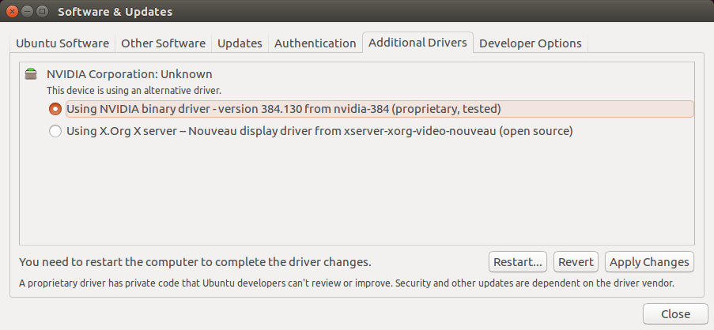

As of 2018, most modern machine learning libraries offer hardware accelerated computation though NVIDIA graphics cards. Unlike most programs that you are probably accustomed to writing, much of your ML code will be run on a computer's GPU instead of CPU. This process is nicely abstracted from you as the software programmer, and you probably won't have to write any low-level parallel processing operations in GPU-specific APIs, but you will need to have the necessary graphics hardware, drivers, and low-level libraries installed on your development machines so that high-level libraries like Tensorflow can work their magic.
This is a short, non-comprehensive guide to setting up a machine learning development environment on an Ubuntu 16.04 desktop with an NVIDIA GeForce graphics card. Both OSX and Windows are supported by NVIDIA's graphics libraries and some of the ML libraries commonly used, but Ubuntu is by far the preferred OS for machine learning development.
Unless you are building, training, and running your ML models exclusively in WebGL with Tensorflow.js, an NVIDIA GPU is non-optional. AMD, Intel, and other competitors do not provide industry-standard APIs and tooling for machine learning, at least not anything that is comparable to NVIDIA's support.
I recommend a GTX 1080Ti or GTX 1080 if you can afford it. If not, any of the GTX 10 series should work. If you don't have access to physical GPU hardware, you can rent cloud-based GPU servers and VPSes from AWS and their competitors. This solution is the cheapest for quick experiments, but cloud-based GPU instances are very expensive in the long run.
First, make sure the software and dependencies are up to date on your machine.
sudo apt update && sudo apt upgrade
NVIDIA drivers can be installed using the "Additional Drivers" application. Use your spotlight to open this app (press command, then search "Additional Drivers"). You may need to wait a few seconds for driver results to show up in the UI. Once they do, select "Using NVIDIA binary driver", then click "Apply Changes". Once the changes have been applied, reboot the machine.

Once the machine is back up open a terminal and run nvidia-smi. If you see a table-like output like whats below, you have successfully installed the NVIDIA drivers.
Mon Jun 25 16:24:20 2018
+-----------------------------------------------------------------------------+
| NVIDIA-SMI 384.130 Driver Version: 384.130 |
|-------------------------------+----------------------+----------------------+
| GPU Name Persistence-M| Bus-Id Disp.A | Volatile Uncorr. ECC |
| Fan Temp Perf Pwr:Usage/Cap| Memory-Usage | GPU-Util Compute M. |
|===============================+======================+======================|
| 0 GeForce GTX 1080 Off | 00000000:01:00.0 On | N/A |
| 17% 49C P5 16W / 200W | 1629MiB / 8110MiB | 8% Default |
+-------------------------------+----------------------+----------------------+
| 1 GeForce GTX 106... Off | 00000000:02:00.0 Off | N/A |
| 40% 31C P8 6W / 120W | 2MiB / 6072MiB | 0% Default |
+-------------------------------+----------------------+----------------------+
+-----------------------------------------------------------------------------+
| Processes: GPU Memory |
| GPU PID Type Process name Usage |
|=============================================================================|
| 0 1455 G /usr/lib/xorg/Xorg 920MiB |
| 0 2372 G /opt/teamviewer/tv_bin/TeamViewer 2MiB |
| 0 2579 G compiz 369MiB |
| 0 3386 G /usr/lib/firefox/firefox 3MiB |
| 0 10034 G ...passed-by-fd --v8-snapshot-passed-by-fd 331MiB |
+-----------------------------------------------------------------------------+
The NVIDIA System Management Interface, or nvidia-smi, is a useful tool to monitor GPU utilization, fan speed, and GPU processes. I find it useful to run it in another terminal using watch when I am running long-running machine learning processes.
# refresh every tenth of a second
watch -n 0.1 nvidia-smi
CUDA is NVIDIA's proprietary parallel computing API. It enables developers to write general purpose parallel programs for NVIDIA GPUs, or GPGPU. While it is possible to write your own CUDA C and C++ programs from scratch, you will most likely be interfacing with CUDA indirectly though a popular deep learning library. These libraries abstract away the custom CUDA code and provide high-level APIs in Python, etc.
Here is a short list of some of the most popular machine learning / deep learning libraries that use NVIDIA's CUDA underneath:
At the time of this writing, CUDA 9.0 is the version compatible with the latest version of Tensorflow (v1.9). You can install this version for Ubuntu/Debian by downloading a .run file here.
Once downloaded, run sudo sh cuda_9.0.176_384.81_linux.run. You will be prompted with several questions like those below. If you've already installed the NVIDIA drivers (in the steps above), type "n" when prompted to install them via the runfile.
Do you accept the previously read EULA?
accept/decline/quit: accept
Install NVIDIA Accelerated Graphics Driver for Linux-x86_64 384.81?
(y)es/(n)o/(q)uit: n
Install the CUDA 9.0 Toolkit?
(y)es/(n)o/(q)uit: y
Enter Toolkit Location
[ default is /usr/local/cuda-9.0 ]: /usr/local/cuda-9.0
Do you want to install a symbolic link at /usr/local/cuda? y
...
Finally, we need to point our OS to the CUDA libs and binaries:
# add CUDA libs to linker path
sudo su -c 'echo "/usr/local/cuda-9.0/lib64" >> /etc/ld.so.conf'
# reload linker cache
sudo ldconfig
# append add CUDA to PATH in .bashrc
echo "PATH=\$PATH:/usr/local/cuda-9.0/bin" >> ~/.bashrc
# reload .bashrc
. ~/.bashrc
Next, you'll need to install NVIDIA's deep neural network library, CuDNN. At the time of this writing, the CuDNN version compatible with Tensorflow is 7.1. To install this library, you will need to register for an NVIDIA developers account (registration is free). Once you've registered, you can download CuDNN from here.
Download and unzip the archive, then copy the source and library files from CuDNN into your CUDA install location.
sudo cp cuda/include/* /usr/local/cuda-9.0/include/
sudo cp cuda/lib64/* /usr/local/cuda-9.0/lib64/
Now that you've installed CUDA and CuDNN, you're ready to install Tensorflow. Tensorflow is installed using Python's pip, so make sure you have that first:
sudo apt install python-pip
# may need to run as sudo
pip install tensorflow tensorflow-gpu
That's it, you should now have a GPU Tensorflow environment setup.
Note: If you'd prefer to write and run Tensorflow code with Python 3.x instead of 2.7, replace pip with pip3 and python with python3 in these example commands.
We'll use Keras and nvidia-smi to make sure our environment is setup correctly.
# install keras
pip install keras
# clone the keras repo so that we can run an example
git clone https://github.com/keras-team/keras
cd keras/examples
# run the self-contained text generation example. This example learns to produce text that
# looks like it was produced by Shakespeare
python lstm_text_generation.py
Now open another terminal and run:
watch -n 0.1 nvidia-smi
If all went well, you should see that the keras example is running and that GPU utilization has spiked, meaning the Tensorflow process is running correctly on your graphics card.
If you have the luxury of running Tensorflow code on a machine that has multiple NVIDIA graphics cards, you may prefer to specify which GPU a specific program runs on. I try and keep my compute-intensive GPU processes off of the graphics card that is running my X window server. You can specify which GPUs a CUDA process will run on using the CUDA_VISIBLE_DEVICES environment variable.
# run on the second GPU
CUDA_VISIBLE_DEVICES=1 python train.py
# you can also specify multiple GPUs, although the code in train.py must be written
# to utilize both cards in order to get a performance boost from this
CUDA_VISIBLE_DEVICES=0,2 python train.py
You can use nvidia-smi to see the IDs of your GPUs.